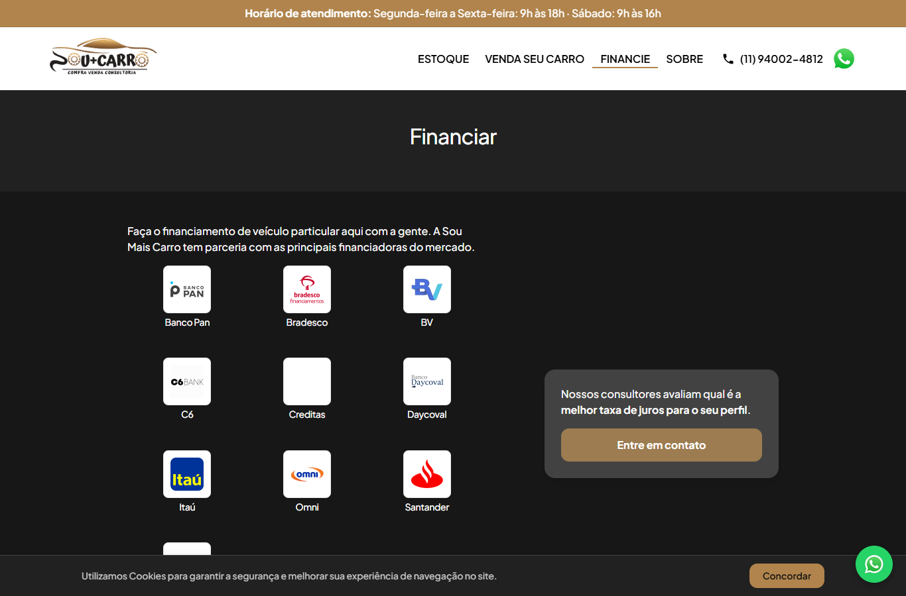
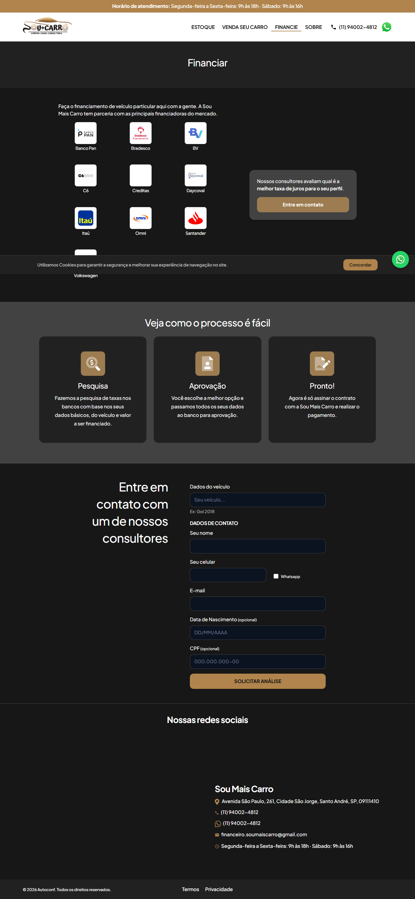

SIMIO · dossiê de candidato · campanha simio-20261119-174043-8bbc · gerado em 2026-11-19T21:22:03+00:00
https://www.soumaiscarro.com.br/financie
REVIEW_REQUIRED Prioridade MEDIUM · Cenário B_AMBIGUOUS_COMMUNICATION · Revisão humana: PENDING
Este dossiê apresenta indícios para apoio à auditoria. Não constitui conclusão regulatória. As conclusões automatizadas devem ser verificadas contra as evidências brutas abaixo (screenshots, catálogo e arquivos com hash). Conteúdo de terceiros é exibido como texto; links não são clicáveis por segurança.
Trata-se de página de financiamento de uma loja de veículos multimarcas ('Sou Mais Carro') claramente identificada por marca, domínio e contatos próprios. A menção ao Banco BV ocorre exclusivamente por meio de seu logotipo inserido em uma grade de dez instituições financeiras parceiras (incluindo Itaú, Bradesco, Santander e Banco Pan) para ilustrar as opções de financiamento intermediadas pela revenda. O caso enquadra-se perfeitamente no critério de uso comercial legítimo por lojista multibancos, sem qualquer indício de confusão ou se passar por canal oficial da instituição.


| Ref | Tipo | Local | Conteúdo |
|---|---|---|---|
| E-URL | domain | url | URL final: https://www.soumaiscarro.com.br/financie (domínio: www.soumaiscarro.com.br) |
| E-DISC-001 | text | search_index | Índice de busca (grounding): soumaiscarro.com.br — **Página:** `soumaiscarro.com.br` (seção `/financie`) | **Irregularidades identificadas:** Além de promover campanhas específicas utilizando a marca do banco em redes sociais (*"Feirão BV na Sou Mais Carro"* / *"Financiamento BV + Sou Mais Carro"*), a página de financiamento destaca a marca **BV** para captação de dados (incluindo CPF), omitindo o CNPJ da loja na interface da página e sem transparência sobre a atuação exclusiva como correspondente bancário |
| E-SHOT-VIEWPORT | screenshot | viewport | evidence\C86bb67e8d7\attempt-1\viewport.png (sha256 6859a9d3afef985e…) |
| E-SHOT-FULL | screenshot | page | evidence\C86bb67e8d7\attempt-1\fullpage.png (sha256 b38e96b46e4a53ef…) |
| E-TITLE | title | head | Financiamento de veículos | Sou Mais Carro | Sou Mais Carro |
| E-META-1 | meta | head | description: A Sou Mais Carro tem parceria com as principais financiadoras do mercado. Ótimas condições nas parcelas e entradas. Nossos consultores avaliam qual é a melhor taxa de juros para o seu perfil e em até 30 minutos. |
| E-META-2 | meta | head | og:site_name: Sou Mais Carro |
| E-META-3 | meta | head | og:title: Carros usados, seminovos em Santo André - Compra e venda - Sou Mais Carro |
| E-META-4 | meta | head | og:description: A Sou Mais Carro tem parceria com as principais financiadoras do mercado. Ótimas condições nas parcelas e entradas. Nossos consultores avaliam qual é a melhor taxa de juros para o seu perfil e em até 30 minutos. |
| E-HEAD-1 | heading | page | Financiar |
| E-HEAD-2 | heading | page | Banco Pan |
| E-HEAD-3 | heading | page | Bradesco |
| E-HEAD-4 | heading | page | BV |
| E-HEAD-5 | heading | page | C6 |
| E-HEAD-6 | heading | page | Creditas |
| E-HEAD-7 | heading | page | Daycoval |
| E-HEAD-8 | heading | page | Itaú |
| E-HEAD-9 | heading | page | Omni |
| E-HEAD-10 | heading | page | Santander |
| E-HEAD-11 | heading | page | Volkswagen |
| E-HEAD-12 | heading | page | Veja como o processo é fácil |
| E-HEAD-13 | heading | page | Nossas redes sociais |
| E-HEAD-14 | heading | page | Sou Mais Carro |
| E-HDR | text | header | ESTOQUE VENDA SEU CARRO FINANCIE SOBRE (11) 94002-4812 WhatsApp |
| E-FOLD | text | viewport (acima da dobra) | Horário de atendimento: Segunda-feira a Sexta-feira: 9h às 18h · Sábado: 9h às 16h Estoque Venda seu Carro Financie Sobre (11) 94002-4812 WhatsApp Financiar Faça o financiamento de veículo particular aqui com a gente. A Sou Mais Carro tem parceria com as principais financiadoras do mercado. Banco Pan Bradesco BV C6 Creditas Daycoval Itaú Omni Santander Volkswagen Nossos consultores avaliam qual é a melhor taxa de juros para o seu perfil . Entre em contato Utilizamos Cookies para garantir a segurança e melhorar sua experiência de navegação no site. Concordar |
| E-FTR | text | footer | Nossas redes sociais Sou Mais Carro Avenida São Paulo, 261, Cidade São Jorge, Santo André, SP, 09111410 (11) 94002-4812 (11) 94002-4812 financeiro.soumaiscarro@gmail.com Segunda-feira a Sexta-feira: 9h às 18h · Sábado: 9h às 16h |
| E-NAV | nav | header | <https://www.soumaiscarro.com.br/> | ESTOQUE <https://www.soumaiscarro.com.br/estoque/> | VENDA SEU CARRO <https://www.soumaiscarro.com.br/venda-seu-carro/> | FINANCIE <https://www.soumaiscarro.com.br/financie/> | SOBRE <https://www.soumaiscarro.com.br/sobre/> | (11) 94002-4812 <tel:11940024812> | WhatsApp <https://wa.me/5511940024812> |
| E-CTA-1 | cta | page | Entre em contato <https://www.soumaiscarro.com.br/financie#contact-finance> |
| E-CTA-2 | cta | page | SOLICITAR ANÁLISE |
| E-CTA-3 | cta | page | Concordar |
| E-CONTACT-1 | contact | header | (11) 94002-4812 <tel:11940024812> |
| E-CONTACT-2 | contact | header | WhatsApp <https://wa.me/5511940024812> |
| E-CONTACT-3 | contact | footer | Instagram <https://www.instagram.com/soumaiscarroabc> |
| E-CONTACT-4 | contact | footer | Facebook <https://www.facebook.com/soumaiscarroabc> |
| E-CONTACT-5 | contact | footer | (11) 94002-4812 <tel:11940024812> |
| E-CONTACT-6 | contact | footer | (11) 94002-4812 <https://wa.me/5511940024812> |
| E-CONTACT-7 | contact | footer | financeiro.soumaiscarro@gmail.com <mailto:financeiro.soumaiscarro@gmail.com> |
| E-CONTACT-8 | contact | page | WhatsApp <https://wa.me/5511940024812> |
| E-IMG-1 | image | header (acima da dobra) | imagem alt='Sou Mais Carro' src=https://assets.autoconf.net.br/sites/sou-mais-carro-comercio-de-veiculos-ltda/logo.png?v=d03f46695d&v=1792530243474 (162x55, acima da dobra) |
| E-IMG-2 | image | page (acima da dobra) | imagem alt='BV' src=https://static.autoconf.com.br/partners/bv@2x.png (50x50, acima da dobra) |
| E-TXT-001 | text | page | Horário de atendimento: Segunda-feira a Sexta-feira: 9h às 18h · Sábado: 9h às 16h |
| E-TXT-002 | text | page | |
| E-TXT-003 | text | page | Banco Pan |
| E-TXT-004 | text | page | BV |
| E-TXT-005 | text | page | Fazemos a pesquisa de taxas nos bancos com base nos seus dados básicos, do veículo e valor a ser financiado. |
| E-TXT-006 | text | page | Você escolhe a melhor opção e passamos todos os seus dados ao banco para aprovação. |
| E-TXT-007 | text | page |
| Dimensão | Sinal | Achado | Refs |
|---|---|---|---|
| VISUAL_IDENTITY | LEGITIMATE | A página utiliza identidade visual própria da loja de veículos 'Sou Mais Carro' (esquema de cores preto, dourado e branco, com logotipo próprio no topo), sem reproduzir a identidade visual do Banco BV. | E-SHOT-VIEWPORT E-SHOT-FULL E-IMG-1 |
| DECLARED_COMMERCIAL_IDENTITY | LEGITIMATE | O estabelecimento identifica-se claramente como 'Sou Mais Carro' no domínio, título, cabeçalho e rodapé, informando endereço físico em Santo André/SP. | E-URL E-TITLE E-HEAD-14 E-FTR E-IMG-1 |
| CORRESPONDENT_TRANSPARENCY | NEUTRAL | Embora não exiba o CNPJ ou termo formal 'correspondente bancário' na página coletada, a loja declara expressamente que possui 'parceria com as principais financiadoras do mercado' e descreve sua atuação como intermediadora que pesquisa taxas nos bancos. | E-FOLD E-TXT-005 E-TXT-006 E-FTR |
| INSTITUTIONAL_LANGUAGE | LEGITIMATE | A comunicação é feita em nome da própria revenda ('A Sou Mais Carro tem parceria...', 'Fazemos a pesquisa de taxas nos bancos...'), sem alegação de oficialidade ou representação exclusiva do Banco BV. | E-FOLD E-TXT-005 E-TXT-006 |
| LOGO_USAGE | LEGITIMATE | O logotipo e o nome 'BV' são exibidos de forma proporcional dentro de uma grade de diversas instituições financeiras parceiras (Banco Pan, Bradesco, C6, Creditas, Daycoval, Itaú, Omni, Santander, Volkswagen). | E-SHOT-VIEWPORT E-IMG-2 E-HEAD-2 E-HEAD-3 E-HEAD-4 E-HEAD-5 E-HEAD-7 E-HEAD-8 E-HEAD-10 |
| SERVICE_JOURNEY | LEGITIMATE | A jornada oferecida consiste em um formulário de solicitação de análise de financiamento de veículo intermediado pelos consultores da loja, sem oferta enganosa de serviços pós-venda típicos de canais oficiais do banco (como 2ª via de boleto ou quitação). | E-SHOT-FULL E-FOLD E-CTA-1 E-CTA-2 |
| CONTACT_CHANNELS | LEGITIMATE | Os canais de contato (telefone, WhatsApp, e-mail e redes sociais) estão claramente vinculados à loja 'Sou Mais Carro'. | E-FTR E-CONTACT-1 E-CONTACT-3 E-CONTACT-4 E-CONTACT-7 |
| CONSUMER_CONFUSION | LEGITIMATE | Não há risco de confusão para o consumidor: fica evidente que se trata de uma loja multimarcas de veículos que intermedia financiamento junto a diversos bancos concorrentes. | E-SHOT-VIEWPORT E-SHOT-FULL E-FOLD |
Trata-se de página de financiamento de uma loja de veículos multimarcas ('Sou Mais Carro') claramente identificada por marca, domínio e contatos próprios. A menção ao Banco BV ocorre exclusivamente por meio de seu logotipo inserido em uma grade de dez instituições financeiras parceiras (incluindo Itaú, Bradesco, Santander e Banco Pan) para ilustrar as opções de financiamento intermediadas pela revenda. O caso enquadra-se perfeitamente no critério de uso comercial legítimo por lojista multibancos, sem qualquer indício de confusão ou se passar por canal oficial da instituição.
Nenhum CNPJ ou razão social identificáveis no conteúdo coletado.
| Tipo | Valor | Ref | Contexto |
|---|---|---|---|
| domain | soumaiscarro.com.br | E-URL | |
| financeiro.soumaiscarro@gmail.com | E-FTR | ||
| social_profile | https://www.instagram.com/soumaiscarroabc | E-CONTACT-3 | |
| social_profile | https://www.facebook.com/soumaiscarroabc | E-CONTACT-4 | |
| bv@2x.png | E-IMG-2 | ||
| trade_name | Sou Mais Carro | E-META-2 | |
| phone | (11) 94002-4812 | E-HDR | |
| phone | 11940024812 | E-NAV | |
| WhatsApp <https://wa.me/5511940024812> | E-CONTACT-2 | ||
| (11) 94002-4812 <https://wa.me/5511940024812> | E-CONTACT-6 |
Mapeamento indicativo para apoio à auditoria. Não constitui conclusão regulatória; a decisão definitiva pertence à auditoria.
Fonte: NORMATIVE
Art. 14. O contrato de correspondente deve estabelecer: [...] II - vedação à utilização, pelo contratado, de logomarca ou de outros atributos que sejam similares aos adotados pela instituição contratante em suas agências, postos de atendimento, sítio eletrônico na internet, aplicativo ou outras plataformas de comunicação em rede;
Hipótese: Uso de logomarca ou de atributos similares aos adotados pela contratante em seus canais. A norma disciplina correspondentes contratados; o responsável não foi identificado como correspondente.
Evidência observada: E-IMG-1 E-IMG-2
Informação faltante:
Fonte: NORMATIVE
Art. 14. O contrato de correspondente deve estabelecer: [...] III - divulgação ao público, pelo contratado, de sua condição de prestador de serviços à instituição contratante, identificada pelo nome com que é conhecida no mercado, com descrição dos produtos e serviços oferecidos e canais de contato da instituição contratante, inclusive de sua ouvidoria, em local visível, em destaque e em formato legível, por meio de: a) sítio eletrônico do correspondente na internet, acessível na página inicial; b) aplicativo e outras plataformas de comunicação em rede do correspondente; [...]
Hipótese: Há declaração da condição de correspondente/prestador, mas outros elementos da página (CONTACT_CHANNELS) podem contradizê-la ou reduzir seu efeito (destaque, legibilidade e identificação da contratante a verificar). A norma disciplina correspondentes contratados; o responsável não foi identificado como correspondente.
Evidência observada: E-CONTACT-2 E-CONTACT-6 E-CONTACT-8 E-FOLD E-FTR
Informação faltante:
Fonte: NORMATIVE
Art. 3º O correspondente atua por conta e sob as diretrizes da instituição contratante, que assume inteira responsabilidade pelo atendimento prestado aos clientes e usuários por meio do contratado.
Hipótese: Atendimento ao público prestado por meio do contratado em condições que podem não seguir as diretrizes da contratante. A norma disciplina correspondentes contratados; o responsável não foi identificado como correspondente.
Evidência observada: E-CONTACT-2 E-CONTACT-6 E-CONTACT-8
Informação faltante:
Se o responsável não for correspondente contratado, os indícios podem caracterizar uso indevido de marca ou fraude, fora do escopo da Res. 4.935: avaliar encaminhamento às áreas jurídica/segurança.
Limitações: requisitos contratuais/internos não fornecidos: mapeamento limitado ao texto normativo
| Fonte | Consulta / hipótese | URL original | Título / trecho |
|---|---|---|---|
| grounding | loja de veículos em São Paulo que utiliza a marca Banco BV (bv financeira) em destaque para oferecer financiamento ou crédito em seu site, onde não fica claro quem é a empresa responsável ou que atua apenas como correspondente H5-establishment:loja de veículos:São Paulo | https://www.soumaiscarro.com.br/financie | soumaiscarro.com.br **Página:** `soumaiscarro.com.br` (seção `/financie`) | **Irregularidades identificadas:** Além de promover campanhas específicas utilizando a marca do banco em redes sociais (*"Feirão BV na Sou Mais Carro"* / *"Financiamento BV + Sou Mais Carro"*), a página de financiamento destaca a marca **BV** para captação de dados (incluindo CPF), omitindo o CNPJ da loja na interface da página e sem transparência sobre a atuação exclusiva como correspondente bancário |
Original: https://www.soumaiscarro.com.br/financie
Final: https://www.soumaiscarro.com.br/financie
| Artefato | Caminho | SHA-256 | Bytes |
|---|---|---|---|
| screenshot_viewport | evidence\C86bb67e8d7\attempt-1\viewport.png | 6859a9d3afef985e0e3a45500bac9875656dc03c063106d07d9e228e0398a390 | 96314 |
| screenshot_full | evidence\C86bb67e8d7\attempt-1\fullpage.png | b38e96b46e4a53ef9f206cbb17f5c95ab53672a8d7dd98ac88e1fd4ca66fb66d | 235588 |
| html | evidence\C86bb67e8d7\attempt-1\page.html.txt | 4a8801d4bc73f155b193b40e83073224b3b0ad118f815d40aa2d97d06b46385b | 97329 |
| text | evidence\C86bb67e8d7\attempt-1\text.txt | 6c9df64ddaab748d51bbbb61b3b227aaf89e8832b4a2627800fbec2a78688009 | 1420 |
| page_data | evidence\C86bb67e8d7\attempt-1\page.json | 99f34f6f6083d786958019d6ca367c3809f1a8ea955e50265501851227c4614b | 12173 |
| Quando | De | Para | Nota |
|---|---|---|---|
| 2026-11-19T18:10:11+00:00 | DISCOVERED | QUEUED | prioritised (score -1.0) |
| 2026-11-19T18:32:29+00:00 | QUEUED | COLLECTING | |
| 2026-11-19T18:32:43+00:00 | COLLECTING | COLLECTED | |
| 2026-11-19T18:32:43+00:00 | COLLECTED | ANALYZING | |
| 2026-11-19T18:33:19+00:00 | ANALYZING | COMPLETED |